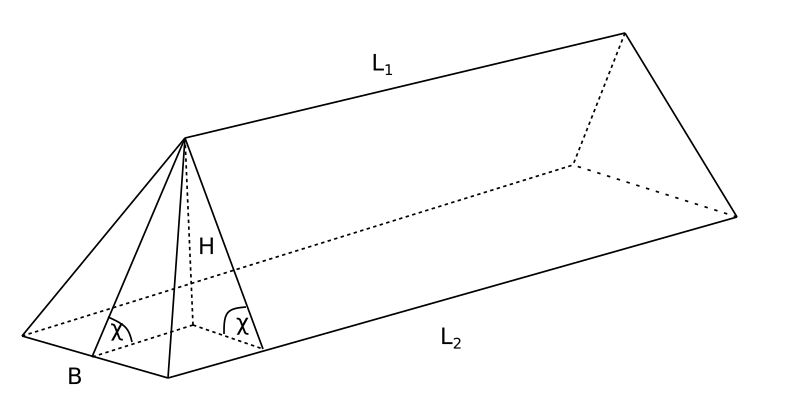

Despite their undeniable and enormous role in applications, the methods of calculus are often seen by students present and past as a form of mathematical art removed from everyday life. Evaluating integrals may seem as a sport for the initiated. Extremal problems are mostly to demonstrated on the stripped-down textbook examples. Coming across a use case in an unusual and easily understandable context is rare. We present one such use case here and hope the reader finds it instructive.
We begin with some background from maritime logistics. The term "bulk cargo" is used to denote the type of cargo, such as coal, ores, fertilizers, grain and the like, carried by merchant vessels "in bulk", that is put directly in the holds and not stuffed in boxes or any other containers. In some cases, while waiting to be picked up by vessels or other modes of transportation, such cargoes will be stored in stacks spilled by belt conveyors or other handling mechanisms.
We consider here a simplified problem of calculating the optimal dimensions of one such stack given its total volume. For the criteria of optimality we pick the ground area occupied by the stack and the work against gravity required to form it.
We shall approximate the stack with a geometrical body in the shape of an obelisk of height $H$, having a rectangle $L_2\times B$ at its base and 4 facets inclined towards the centre at equal angles, thus forming the upper horizontal edge of length $L_1$ (see Figure 1).
The volume of the stack can be calculated as follows: $$\begin{aligned}V& =\int_0^HS(x)\,\mathrm{d}x , & (1)\end{aligned}$$ where the $x$-axis is directed downwards and $S(x)$ is the area of the horizontal cross-section as a function of $x$, given explicitly as $$\begin{aligned}S(x)&=a(x)\cdot b(x)\\&=\left(L_{1}+\frac{L_{2}-L_{1}}{H}x\right)\cdot\frac{Bx}{H}\\&=B\left(L_{1}\frac{x}{H}+\left(L_{2}-L_{1}\right)\left(\frac{x}{H}\right)^{2}\right).&(2)\end{aligned}$$ Substituting (2) in (1) and integrating we find $$\begin{aligned}V&=BH\int_0^1\left(L_1\frac{x}{H}+(L_2-L_1)\left(\frac{x}{H}\right)^2\right)\,\mathrm{d}\left(\frac{x}{H}\right)\\&=\frac{HB}{6}(2L_2+L_1) &(3)\end{aligned}$$
Now we shall determine the amount of work (energy spent) performed against the forces of gravity that is required to form the stack. Assume that density of the cargo is $\gamma\; \mathrm{kg}/\mathrm{m}^3$. The work $\mathrm{d}A$ required to lift a layer of thickness $\mathrm{d}x$ to height $H-x$ is given as follows: $$dA=\gamma gdV\cdot(H-x)=\gamma gB\left(L_1\frac{x(H-x)}{H}+\frac{(L_2-L_1)x^2(H-x)}{H^2}\right)\,\mathrm{d}x,$$ where $g\approx 9.81 \,\mathrm{kg} \cdot \mathrm{m} / \mathrm{s}^2$ is the acceleration due to gravity. Thus, the total work is $$\begin{aligned}A&=\gamma gB\int_0^H\left(L_1\frac{x(H-x)}{H}+\frac{(L_2-L_1)x^2(H-x)}{H^2}\right)\,\mathrm{d}x\\&=\frac{\gamma gBH^2}{12}(L_1+L_2). & (4)\end{aligned}$$
Now we can ask the following question: if the volume $V$ given, what should be base length $L_{2}$ and width $B$ of so that the stack occupies the smallest possible area? First, we simplify our parametrization of the problem by introducing the angle of the natural slope $\chi$. This is a term from the soil mechanics which denotes the angle that an unattached slope of the material forms with the horizontal surface at mechanical equilibrium. It depends on the properties of the material such as density and viscosity, and can be looked up in special tables.
In our model $$\begin{aligned}\frac{2H}{B}=\tan{\chi}.\end{aligned}$$ We can, therefore, express everything in terms of $L\equiv L_2$, $B$ and $\chi$ $$\begin{aligned}H=\frac{1}{2}B\tan{\chi}, &\qquad L_1=L_2-\frac{2H}{\tan{\chi}}=L-B& (5).\end{aligned}$$ Then the volume (3) can be rewritten as follows $$\begin{aligned}V&=\frac{B^2\tan{\chi}}{12}(3L-B).&(6)\end{aligned}$$ Solving (6) for $L$ we obtain $$\begin{aligned}L&=\frac{4V}{B^2\tan{\chi}}+\frac{B}{3}.&(7)\end{aligned}$$ The base area $S$ can then be expressed as the function of $B$ $$S(B)=LB=\frac{4V}{B\tan{\chi}}+\frac{B^2}{3},$$ whereby taking the derivative with respect to $B$ and solving $S'(B) = 0$ we find the stationary point $B_0$ $$\begin{aligned}B_0&=\sqrt[3]{\frac{6V}{\tan{\chi}}},& (8)\end{aligned}$$ which happens to be a point of minimum for $S$. Using (8) $L_0$ is found as follows $$\begin{aligned}L_0&=\left(\frac{4}{\sqrt[3]{36}}+\frac{2}{3}\sqrt[3]{36}\right)\sqrt[3]{\frac{V}{\tan{\chi}}},&(9)\end{aligned}$$ so that the minimal area is $$\begin{aligned}S_0=S(B_0)&=4\left(\frac{1}{\sqrt[3]{6}}+1\right)\left(\frac{V}{\tan{\chi}}\right)^{2/3}\approx 6.2\left(\frac{V}{\tan{\chi}}\right)^{2/3}.&(10)\end{aligned}$$
Next we shall determine the values of $L$, $B$ which minimize the amount of work required to form the stack. Rewriting (4) using (5) and (7) we obtain
$$A=\frac{\gamma g \tan^2{\chi}}{144}\left(\frac{24VB}{\tan{\chi}}-B^4\right)$$ Differentiating with respect to $B$ we find the stationary point to be given precisely by (8) again! Thus we find that, given the volume and the natural slope (8) and (9) actually produce the optimal solution, both in terms of the ground area, and the energy cost. Finally, we can use the above results to determine the largest admissible volume of a single stack given the constraint on the ground pressure, $q,\, \mathrm{kg}/\mathrm{m}^2$. Given $V$, $S$ and $\gamma$ the safety condition is expressed by the inequality
$$\frac{V\gamma}{S} < q$$
Solving for $V$ and using (10) we derive
$$\begin{aligned}V&<\frac{qS}{\gamma}\approx\frac{q}{\gamma}6.2\left(\frac{V}{\tan{\chi}}\right)^{2/3},\\V&<\frac{(4.4q)^3}{\gamma^3\tan{\chi}}\approx 238.48\frac{q^3}{\gamma^3\tan{\chi}}.\end{aligned}$$
The model can be modified to account for the fact that in practice the edges of the stack can develop surfaces that look like half-cones. In this case the reader will find, following the steps similar to the above that the total area and the work required to form the stack are given by $$\begin{aligned}S(B) = \frac{4V}{B\tan{\chi}} + \frac{\pi}{12}B^2, &\qquad A(B) = \frac{\gamma g \tan^2{\chi}}{144}\left(\frac{24VB}{\tan{\chi}}-\frac{3\pi}{4}B^4\right),\end{aligned}$$ respectively. The values $B_{S}$ and $B_{A}$ minimizing the above expressions will not be the same anymore $$\begin{aligned}B_{S}=\sqrt[3]{3}B_{A}, &\qquad B_{A} = 2\sqrt[3]{\frac{V}{\pi\tan{\chi}}}.\end{aligned}$$ We have thus determined the maximum allowed volume, given the safety constraint and the properties of the material, assuming the optimal dimensions of the stack. In conclusion, we have considered a simple but non-trivial application of the very basic tools of calculus to a problem that has important engineering applications. However, the main point is that calculus is ubiquitous and sometimes can deliver useful and elegant results in places one would least expect it to.